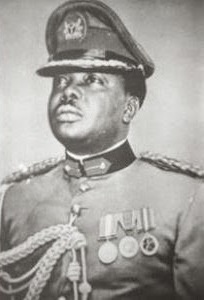

THE HISTORY OF NIGERIA BEFORE AND AFTER INDEPENDENCE
The history of Nigeria can be traced to settlers trading across the middle East and Africa as early as 1100 BC. Numerous ancient African civilizations settled in the region that is known today as Nigeria, such as the Kingdom of Nri,the Benin Empire, and the Oyo Empire. Islam reached Nigeria through the Borno Empire between (1068 AD) and Hausa States around (1385 AD) during the 11th century, while Christianity came to Nigeria in the 15th century through Augustinian and Capuchin monks from Portugal. The Songhai Empire also occupied part of the region.
The history of Nigeria has been crucially impacted by the Transatlantic Slave Trade ,which started in Nigeria in the late 15th century. At first, Europeans captured people who lived along the coast. The first slave trading post used by the British and the Portuguese is Badagry , a coastal harbour. The chains where they tied up young and virile young people still stands today. Later, they used local brokers to provide them with slaves. This activity escalated conflicts among the different ethnic groups in the region and disrupted older trade patterns through the Trans-Saharan route.
Lagos was invaded by British forces in 1851 and formally annexed in 1865. Nigeria became a British protectorate in 1901 while her colonization lasted until 1960, when an independence movement succeeded in gaining her independence. Nigeria first became a republic in 1963, but succumbed to military rule three years later after a bloody coup d'état. A separatist movement later formed the Republic of Biafra in 1967, leading to the three-year Nigerian Civil War . Nigeria became a republic once again after a new constitution was written in 1979. However, the republic was short-lived, when the military seized power again for another four years. A new republic was planned to be established in 1993, but was aborted by General Sani Abacha. Abacha died in 1998 and a fourth republic was later established the following year, which ended three decades of intermittent military rule.

Hausa Kingdoms
The Hausa Kingdoms were a collection of states started by the Hausa people , situated between the Niger River and Lake Chad . Their history is reflected in the Bayajidda legend, which describes the adventures of the Baghdadi hero Bayajidda culminating in the killing of the snake in the well of Daura and the marriage with the local queen magajiya Daurama . While the hero had a child with the queen, Bawo, and another child with the queen's maid-servant, Karbagari
Sarki Mythology
According to the Bayajidda legend, the Hausa states were founded by the sons of Bayajidda, a prince whose origin differs by tradition, but official canon records him as the person who married the last Kabara of Daura and heralded the end of the matriarchal monarchs that had erstwhile ruled the Hausa people. Contemporary historical scholarship views this legend as an allegory similar to many in that region of Africa that probably referenced a major event, such as a shift in ruling dynasties.
Banza Bakwa
According to the Bayajidda legend, the Banza Bakwai states were founded by the seven sons of Karbagari ("Town-seizer"), the unique son of Bayajidda and the slave-maid, Bagwariya. They are called the Banza Bakwai meaning Bastard or Bogus Seven on account of their ancestress' slave status
Hausa Bakwai
The Hausa Kingdoms began as seven states founded according to the Bayajidda legend by the six sons of Bawo, the unique son of the hero and the queen Magajiya Daurama in addition to the hero's son, Biram or Ibrahim, of an earlier marriage. The states included only kingdoms inhabited by Hausa-speakers:
YORUBA
Historically the Yoruba people have been the dominant group on the west bank of the Niger . Their nearest linguistic relatives are the Igala who live on the opposite side of the Niger's divergence from the Benue , and from whom they are believed to have split about 2,000 years ago. The Yoruba were organized in mostly patrilineal groups that occupied village communities and subsisted on agriculture. From approximately the 8th century, adjacent village compounds called ile coalesced into numerous territorial city-states in which clan loyalties became subordinate to dynastic chieftains. Urbanization was accompanied by high levels of artistic achievement, particularly in terracotta and ivory sculpture and in the sophisticated metal casting produced at Ife .
The Yoruba pay tribute to a pantheon composed of a Supreme Deity, Olorun and the Orisha. The Olorun is now called God in the Yoruba language. There are 400 deities called Orisha who perform various tasks. According to the Yoruba , Oduduwa is regarded as the ancestor of the Yoruba kings. According to one of the various myths about him, he founded Ife and dispatched his sons and daughters to establish similar kingdoms in other parts of what is today known as Yorubaland . The Yorubaland now consists of different tribes from different states which are located in the Southwestern part of the country, states like Lagos State , Oyo State , Ondo State , Osun State , Ekiti State and Ogun State , among others.
IGBO KINGDOM
Nri Kingdom
The Kingdom of Nri is considered to be the foundation of Igbo culture , and the oldest Kingdom in Nigeria. Nri and Aguleri, where the Igbo creation myth originates , are in the territory of the Umueri clan, who trace their lineages back to the patriarchal king-figure, Eri . Eri's origins are unclear, though he has been described as a "sky being" sent by Chukwu (God).He has been characterized as having first given societal order to the people of Anambra .
Archaeological evidence suggests that Nri hegemony in Igboland may go back as far as the 9th century, and royal burials have been unearthed dating to at least the 10th century. Eri, the god-like founder of Nri, is believed to have settled the region around 948 with other related Igbo cultures following after in the 13th century. The first Eze Nri (King of Nri), Ìfikuánim, followed directly after him. According to Igbo oral tradition, his reign started in 1043. At least one historian puts Ìfikuánim's reign much later, around 1225 .
Northern Kingdoms of Sahel
Trade is the key to the emergence of organized communities in the sahelian portions of Nigeria. Prehistoric inhabitants adjusting to the encroaching desert were widely scattered by the third millennium BC, when the desiccation of the Sahara began. Trans-Saharan trade routes linked the western Sudan with the Mediterranean since the time of Carthage and with the Upper Nile from a much earlier date, establishing avenues of communication and cultural influence that remained open until the end of the 19th century. By these same routes, Islam made its way south into West Africa after the 9th century.
By then a string of dynastic states, including the earliest Hausa states, stretched into western and central Sudan. The most powerful of these states were Ghana , Gao , and Kanem , which were not within the boundaries of modern Nigeria but which influenced the history of the Nigerian savanna. Ghana declined in the 11th century but was succeeded by the Mali Empire which consolidated much of western Sudan in the 13th century.
Following the breakup of Mali, a local leader named Sonni Ali (1464–1492) founded the Songhai Empire in the region of middle Niger and western Sudan and took control of the trans-Saharan trade. Sonni Ali seized Timbuktu in 1468 and Djenné in 1473, building his regime on trade revenues and the cooperation of Muslim merchants. His successor Askia Muhammad Ture (1493–1528) made Islam the official religion, built mosques, and brought Muslim scholars, including al-Maghili (d.1504), the founder of an important tradition of Sudanic African Muslim scholarship, to Gao.
Although these western empires had little political influence on the Nigerian savanna before 1500 they had a strong cultural and economic impact that became more pronounced in the 16th century, especially because these states became associated with the spread of Islam and trade. Throughout the 16th-century much of northern Nigeria paid homage to Songhai in the west or to Borno , a rival empire in the east.
INDEPENDENCE
The Federation of Nigeria was granted full independence on 1 October 1960 under a constitution that provided for a parliamentary government and a substantial measure of self-government for the country's three regions. From 1959 to 1960, Jaja Wachuku was the First Nigerian Speaker of the Nigerian Parliament , also called the "House of Representatives." Jaja Wachuku replaced Sir Frederick Metcalfe of Britain. Notably, as First Speaker of the House, Jaja Wachuku received Nigeria's Instrument of Independence, also known as Freedom Charter, on 1 October 1960, from Princess Alexandra of Kent, the Queen's representative at the Nigerian independence ceremonies. Queen Elizabeth II was monarch of Nigeria and head of state , and Nigeria was a member of the British Commonwealth of Nations . The Federal government was given exclusive powers in defence, foreign relations, and commercial and fiscal policy. The monarch of Nigeria was still head of state but legislative power was vested in a bicameral parliament, executive power in a prime minister and cabinet, and judicial authority in a Federal Supreme Court. Political parties, however, tended to reflect the makeup of the three main ethnic groups. The Nigerian People's Congress (NPC) represented conservative, Muslim, largely Hausa and Fulani interests that dominated the Northern Region. The northern region of the country, consisting of three-quarters of the land area and more than half the population of Nigeria. Thus the North dominated the federation government from the beginning of independence. In the 1959 elections held in preparation for independence, the NPC captured 134 seats in the 312-seat parliament.
Capturing 89 seats in the federal parliament was the second-largest party in the newly independent country the National Council of Nigerian Citizens (NCNC). The NCNC represented the interests of the Igbo - and Christian-dominated people of the Eastern Region of Nigeria. and the Action Group (AG) was a left-leaning party that represented the interests of the Yoruba people in the West. In the 1959 elections, the AG obtained 73 seats.
The first post-independence national government was formed by a conservative alliance of the NCNC and the NPC. Upon independence, it was widely expected that Ahmadu Bello the Sardauna of Sokoto, the undisputed strong man in Nigeria who controlled the North, would become Prime Minister of the new Federation Government. However, Bello chose to remain as premier of the North and as party boss of the NPC, selected Sir Abubakar Tafawa Balewa , a Hausa, to become Nigeria's first Prime Minister.
The Yoruba-dominated AG became the opposition under its charismatic leader Chief Obafemi Awolowo . However, in 1962, a faction arose within the AG under the leadership of Ladoke Akintola who had been selected as premier of the West. The Akintola faction argued that the Yoruba peoples were losing their pre-eminent position in business in Nigeria to people of the Igbo tribe because the Igbo-dominated NCNC was part of the governing coalition and the AG was not The federal government Prime Minister, Balewa agreed with the Akintola faction and sought to have the AG join the government. The party leadership under Awolowo disagreed and replaced Akintola as premier of the West with one of their own supporters. However, when the Western Region parliament met to approve this change, Akintola supporters in the parliament started a riot in the chambers of the parliament. Fighting between the members broke out. Chairs were thrown and one member grabbed the parliamentary Mace and wielded it like a weapon to attack the Speaker and other members. Eventually, the police with tear gas were required to quell the riot. In subsequent attempts to reconvene the Western parliament, similar disturbances broke out. Unrest continued in the West and contributed to the Western Region's reputation for, violence, anarchy and rigged elections. Federal Government Prime Minister Balewa declared martial law in the Western Region and arrested Awolowo and other members of his faction charged them with treason. Akintola was appointed to head a coalition government in the Western Region. Thus, the AG was reduced to an opposition role in their own stronghold.
DEMOCRACY DAY

Nigeria's Democracy day was originally celebrated on May 29, every year since General Olusegun Obasanjo emerged President in 1999. However, on June 12, 2018, General Muhammadu Buhari, as president, announced a shift in this date from May 29 to June 12, as from the year 2019. This was to commemorate the June 12th election of 1993, and the events that surrounded it.
PAST LEADERS OF NIGERIA

NNAMDI AZIKWE
Nnamdi Azikwe ruled from (16 November 1904-11 May 1996), was popularly called “Zik of Africa ” a well respected Nigerian Statesman. He was the first Indigenous Governor General of Nigeria and the first president of Nigeria from 1963 to 1966 when Nigeria became a republic. Azikwe was one of the major nationalist that strongly agitated for Nigeria’s independence. He is popularly regarded as the father of Nigerian nationalism.
SIR ABUBAKAR TAFAWA BALEWA
Tafawa Balewa ruled from (December 1912 – January 15 1960) Alhaji Sir Abubakar Tafawa Balewa the first Prime Minister of Nigeria was one of the founding members of the NPC party that ruled Nigeria in the first quarter of Nigeria’s independence. Sir Abubakar Tafawa Balewa is regarded as the father of Nigeria Foreign policy. He was killed during the January 15 1996 military coup in Nigeria.
GENERAL J.T.U AGUYI-IRONSI
General Ironsi ruled from (January 15th 1966 – July 29th 1966.) J.T.U Aguiyi-Ironsi was the first Nigeria Military Head of State. Being the highest ranking officer after the January 15th 1996 Military coup, he became the Nigeria Head of States from 16th of January until july 29th 1996 when he was assassinated during a counter coup by a group of Northern Nigerian soldiers led by Major Theophilus Danjuma, Major Ibrahim Babangida, and General Murtala Mohammed.
GENERAL YAKUBU GOWON

He was born on October 19 1934.He was the second Nigeria Military head of State. Popularly known as “Jack” Gowon ruled from 1966-1975, he was the head of government during the Nigeria civil war. He was overthrown on July 29th 1975 while on an O.A.U summit in Kampala. Gowon government witnessed the post-war economic boom.
GENERAL MURTALA MOHAMMED

General Murtala Mohammed ruled from (8 November 1938- 13 February 1976 ) General Murtala Muhammed was the 4ht Head of State of Nigeria. He ruled for about six months until he was assassinated in 1976 .
GENERAL OLUSEGUN OBASANJO
General Obasanjo is an elder Statesman and a political leader. Popularly known as “The Oracle of African Politics’ served as the Military head of state between 1976-1979. He took over power after the unfortunate assassination of his boss General Murtala Muhammed. Obasanjo later served as a civilian president of Nigeria between 1999-2007. Now regarded as Chief Olusegun Obasanjo, is widely respected for handing over power to civilian rule after a much prolonged Military era.
ALHAJI SHEHU SHAGARI
Shagari ruled from (February 25, 1925- December 28, 2018) Alhaji Shehu Shagari was the first democratically elected president of Nigeria after General Olusegun handed over power to Civilian rule. He was a well respected Nigerian Statesman.
General Muhammadu Buhari (born on 17 December 1942) is the incumbent Nigerian president. He was democratically elected into office in 2015 after 3 consecutive attempts. He previously served as a head of state after he took over power through a palace coup in 1983 and ruled till 1985. He was also democratically elected 2019 for a second term.
GENERAL IBRAHIM BADAMASI BABANGIDA
Babangida was born on the 17th of Aug 1941 known as Maradonna of Africa, IBB is a Military general that served as the Nigeria Military President from 1985- 1993. He resigned in 1993 after so much international pressure to hand over power to a civilian government. He masterminded several military coups in Nigeria.
CHIEF ERNEST SHONEKAN
Shonekan was born on the 9th of May 1936 Is a renowned lawyer and businessman. He was appointed the interim president of Nigeria in 1995 by General Ibrahim Babangida. The Shonekan government was believed to be a very weak one because it was placed under the control of the military.
GENERAL SANI ABACHA
He ruled from ( September 20 1943- 8 June 1998) was a de facto president of Nigeria from 1993 until his death in 1998. General Sanni Abacha was known as one of the deadliest African despotic rulers. He ordered the death of a popular activist Ken Saro Wiwa, 8 other Ogboni members and thousands of civilians.He is known for a great level of corruption and embezzlement that could be compared to that of Mansa Kanka Musa. He died in the office.
GENERAL ABDULSALAM ABUBAKAR
He was born on june 13, 1942 served as the military president of Nigeria between 1998 to 1999. He succeeded general Sanni Abacha after his death. He initiated the adaptation of a modified version of the 1979 constitution. He also handed over power to a president elect government on may 29 1999. He was recently made the chairman of the National peacekeeping committee.
CHIEF OLUSEGUN OBASANJO
He ruled from ( May 29 1999- May 29 2007): we talked about the so much called “Oracle of African Politics earlier”. His second era in government brought about so many remarkable achievements in the country. Improved many government parastatals and revived a good image of Nigeria in the international Arena.
ALHAJI MUSA YAR’ADUA
(16 August 1951- 5 May 2010) Musa Yar’adua was declared the winner of the very controversial presidential election held on 21 April 2007. His tenure was however cut shot when he died after he returned from Saudi Arabia on May 5 2009.
GOODLUCK JONATHAN

He was born on the 20th of November 1957 popularly known as “A man without no shoes” is arguably the most respected past Nigeria president for handing over power peacefully to his successor in 2015. He acted as the acting president for months after the death of President Musa Yar’adua before he was duly elected as the president between 2010- 2015.
MUHAMMADU BUHARI
He was born on the 17th of December 1942 much has been said about president Buhari in the preceding paragraph. Served as an head of State in 1983- 1985. He contested three times before he was finally elected through a democratic electoral process in 2015. He was also elected for a second term in February 2019.